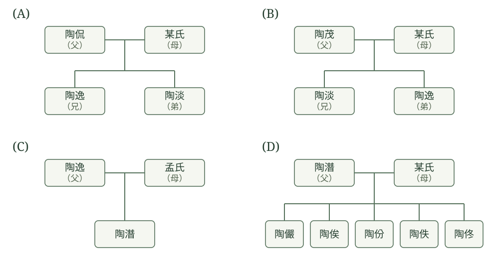
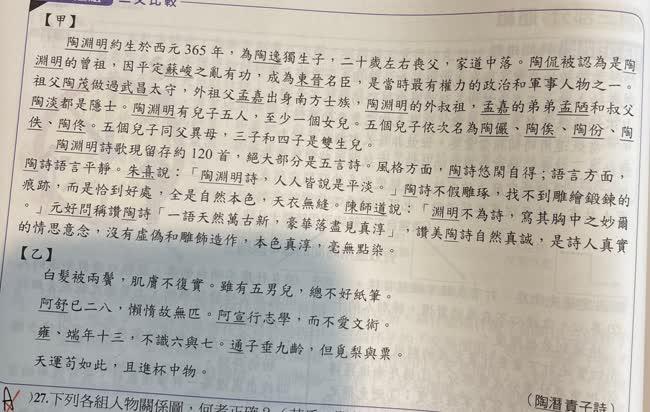
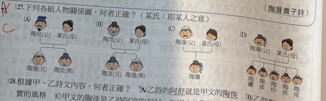

分享原卷｜多文比較・第27題
完整原題
作答所需文章／材料
【甲】 陶淵明約生於西元365年，為陶逸獨生子，二十歲左右喪父，家道中落。陶侃被認為是陶淵明的曾祖，因平定蘇峻之亂有功，成為東晉名臣，是當時最有權力的政治和軍事人物之一。祖父陶茂做過武昌太守，外祖父孟嘉出身南方士族，陶淵明的外叔祖，孟嘉的弟弟孟陋和叔父陶淡都是隱士。陶淵明有兒子五人，至少一個女兒。五個兒子依次名為陶儼、陶俟、陶份、陶佚、陶佟。五個兒子同父異母，三子和四子是雙生兒。 陶淵明詩歌現留存約120首，絕大部分是五言詩。風格方面，陶詩悠閒自得；語言方面，陶詩語言平靜。朱熹說：「陶淵明詩，人人皆說是平淡。」陶詩不假雕琢，找不到雕繪鍛鍊的痕跡，而是恰到好處，全是自然本色，天衣無縫。陳師道說：「淵明不為詩，寫其胸中之妙爾。」元好問稱讚陶詩「一語天然萬古新，豪華落盡見真淳」，讚美陶詩自然古茂，是詩人真實的情思意念，沒有虛偽和雕飾造作，本色真淳，毫無點染。 【乙】 白髮被兩鬢，肌膚不復實。雖有五男兒，總不好紙筆。 阿舒已二八，懶惰故無匹。阿宣行志學，而不愛文術。 雍、端年十三，不識六與七。通子垂九齡，但覓梨與栗。 天運苟如此，且進杯中物。 （陶潛〈責子詩〉）
下列各組人物關係圖，何者正確？（某氏：即某人之意）
（各選項的關係線與稱謂如附圖，下列文字同步列出圖中內容。）
(A) 陶侃（父）與某氏（母）所生二子：陶逸（兄）、陶淡（弟）。
(B) 陶茂（父）與某氏（母）所生二子：陶淡（兄）、陶逸（弟）。
(C) 陶逸（父）與孟氏（母）之子為陶潛。
(D) 陶潛（父）與某氏（母）的同一親子線下列五子：陶儼、陶俟、陶份、陶佚、陶佟。
先想一想，再查看答案、解說與原圖
原卷作答：原卷先寫A後劃去，另以紅筆標C
答案：(C)。陶逸與孟氏之子為陶潛（陶淵明）。
逐項解析
| 選項與原句 | 判讀 | 句意與判斷理由 |
|---|---|---|
| (A) 陶侃（父）與某氏（母）所生二子：陶逸（兄）、陶淡（弟）。 | 不選 | 陶侃是陶淵明的曾祖，不能直接畫成其父陶逸的父親。 |
| (B) 陶茂（父）與某氏（母）所生二子：陶淡（兄）、陶逸（弟）。 | 不選 | 叔父是父親之弟；應為陶逸兄、陶淡弟，圖中反過來。 |
| (C) 陶逸（父）與孟氏（母）之子為陶潛。 | 應選 | 父陶逸、母孟氏、子陶潛，符合甲文關係。 |
| (D) 陶潛（父）與某氏（母）的同一親子線下列五子：陶儼、陶俟、陶份、陶佚、陶佟。 | 不選 | 甲文說同父異母，圖中卻以同一母親連到五子。 |
詳細說明與解題步驟
一、先用甲文建立世代與身分
甲文說陶淵明是陶逸的獨生子，祖父為陶茂，曾祖為陶侃，外祖父為孟嘉；陶潛即陶淵明。外祖父是母親的父親，所以圖中的母親孟氏與這條關係相符。
二、(A)把世代少畫一層
(A)把陶侃畫成陶逸、陶淡的父親。甲文卻說陶侃是陶淵明的曾祖，陶茂才是陶淵明的祖父，因此(A)的親子世代不符。
三、(B)錯在兄弟長幼，不能把錯誤原因說成不同父
甲文稱陶淡為陶淵明的「叔父」；叔父是父親的弟弟。因此陶逸應為兄、陶淡應為弟。
(B)卻把陶淡標為兄、陶逸標為弟，長幼顛倒，故不選。陶淡與陶逸同屬父輩，不能用「他們不是陶茂的兒子」當成(B)的錯誤理由；要依圖中實際的「兄／弟」判斷。
四、(C)符合題意
(C)父親陶逸、母親孟氏，下接陶潛，符合甲文說的陶逸獨生子與外祖孟嘉的關係，所以選(C)。
五、(D)忽略同父異母
(D)把五子畫在陶潛與同一位某氏的共同親子線下，會表示同一對父母所生；甲文卻說五子同父異母，所以不符。原文沒有交代各子究竟分屬哪一位母親，不能再自行指定母系分組。
核對註記：使用者已確認q-247目前內容OK；保留原題、答案C與B兄弟長幼相反的解說。
原圖（僅本題）

